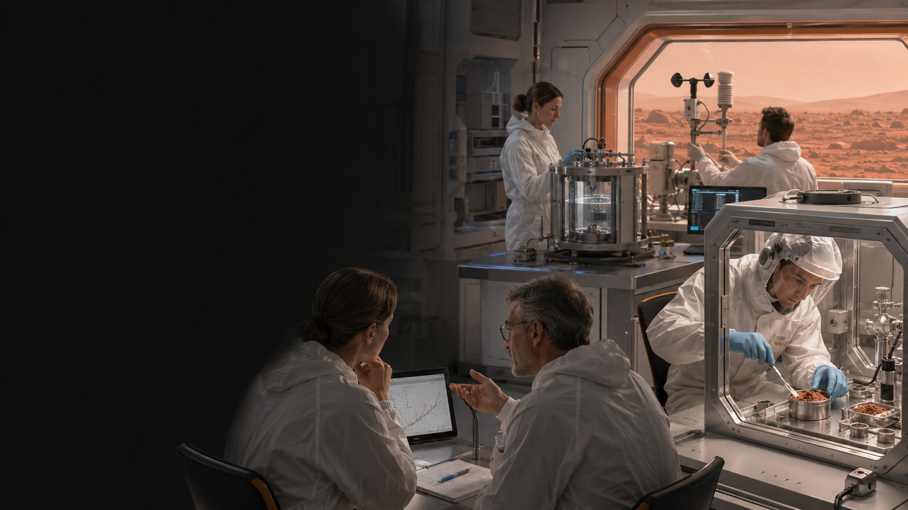

Strategic consulting
Business assessments, technology roadmaps, governance, organizational alignment, growth planning, and executive decision support.
MIFECO combines executive consulting, systems thinking, digital transformation, and agentic AI to help organizations turn complex objectives into governed, measurable work.


MIFECO is a strategic business and technology consultancy serving organizations that need disciplined transformation, clearer decisions, and faster execution. Its work spans strategic planning, digital transformation, operational improvement, AI-enabled engineering, program delivery, and space-technology innovation.
The Mars Harness Lab reflects that approach: evidence is classified, assumptions remain visible, specialists work through controlled handoffs, and consequential decisions stay under human authority.
Engagements can begin with an assessment, a focused consulting project, or direct access to MIFECO’s browser-based AI applications.
Business assessments, technology roadmaps, governance, organizational alignment, growth planning, and executive decision support.
Use-case discovery, agentic workflow design, automation planning, data integration, adoption, controls, and measurable implementation.
Systems engineering, mission planning, Mars technology development, research collaboration, and evidence-controlled technical programs.
Purpose-built SaaS tools for AI project management, rapid project delivery, and disciplined engineering workflows.
The SaaS portfolio turns MIFECO’s project, engineering, and AI methods into working browser applications. Explore each tool, open its live demonstration, or purchase monthly access from the verified MIFECO SaaS page.